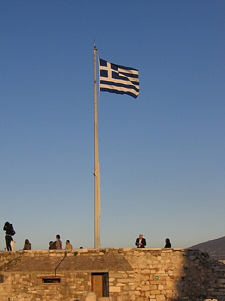

Introduction
Greece achieved independence from the Ottoman Empire in 1830. During the second half of the 19th century and the first half of the 20th century, it gradually added neighboring islands and territories, most with Greek-speaking populations. In World War II, Greece was first invaded by Italy (1940) and subsequently occupied by Germany (1941-44); fighting endured in a protracted civil war between supporters of the king and other anti-communist and communist rebels. Following the latter's defeat in 1949, Greece joined NATO in 1952. In 1967, a group of military officers seized power, establishing a military dictatorship that suspended many political liberties and forced the king to flee the country.
In 1974 following the collapse of the dictatorship, democratic elections and a referendum created a parliamentary republic and abolished the monarchy. In 1981, Greece joined the EC (now the EU); it became the 12th member of the European Economic and Monetary Union in 2001. From 2009 until 2019, Greece suffered a severe economic crisis, due to nearly a decade of chronic overspending and structural rigidities. Beginning in 2010, Greece entered three bailout agreements - the first two with the European Commission, the European Central Bank, and the IMF; and the third in 2015 with the European Stability Mechanism - worth in total about $300 billion. The Greek Government formally exited the third bailout in August 2018.
Environment
Current Issues
air pollution; air emissions from transport and electricity power stations; water pollution; degradation of coastal zones; loss of biodiversity in terrestrial and marine ecosystems; increasing municipal and industrial waste
International Agreements
party to: Air Pollution, Air Pollution-Nitrogen Oxides, Air Pollution-Sulphur 94, Antarctic-Environmental Protection, Antarctic-Marine Living Resources, Antarctic Treaty, Biodiversity, Climate Change, Climate Change-Kyoto Protocol, Climate Change-Paris Agreement, Comprehensive Nuclear Test Ban, Desertification, Endangered Species, Environmental Modification, Hazardous Wastes, Law of the Sea, Marine Dumping-London Convention, Nuclear Test Ban, Ozone Layer Protection, Ship Pollution, Tropical Timber 2006, Wetlands signed, but not ratified: Air Pollution-Heavy Metals, Air Pollution-Multi-effect Protocol, Air Pollution-Persistent Organic Pollutants, Air Pollution-Volatile Organic Compounds
Climate
temperate; mild, wet winters; hot, dry summers
Government
Government Type
Parliamentary Republic
Capital
- name: Athens
- geographic coordinates: 37 59 N, 23 44 E
- time difference: UTC+2 (7 hours ahead of Washington, DC, during Standard Time)
- daylight saving time: +1hr, begins last Sunday in March; ends last Sunday in October
- etymology: Athens is the oldest European capital city; according to tradition, the city is named after Athena, the Greek goddess of wisdom; in actuality, the appellation probably derives from a lost name in a pre-Hellenic language
National Holiday
Independence Day, 25 March (1821)
Military and Security
Military expenditures
| Year | Expenditure (% of GDP) |
|---|---|
| 2023 | 3% |
| 2022 | 3.9% |
| 2021 | 3.7% |
| 2020 | 2.9% |
| 2019 | 2.5% |
Military service age and obligation
19-45 years of age for compulsory military service for men; 12-month obligation for all services (note - as an exception, the duration of the full military service is 9 instead of 12 months if conscripts, after the initial training, serve the entire remaining time in certain areas of the eastern borders, in Cyprus, or in certain military units); 18 years of age for voluntary military service for men and women (2023)
note 1: compulsory service applies to any individual whom the Greek authorities consider to be Greek, regardless of whether the individual considers himself Greek, has a foreign citizenship and passport, or was born or lives outside of Greece; Greek citizens living permanently outside of Greece have the right to postpone their conscription; they are permanently exempted from their military obligations when they reach the age of 45 years old
note 2: up to 50% of the Greek military is comprised of conscripts
note 3: as of 2020, women comprised approximately 16% of the military's full-time personnel
Military equipment inventories and acquisitions
the military's inventory consists of a mix of imported weapons from Europe and the US, as well as a limited number of domestically produced systems; in recent years, France, Germany, and the US have been the top suppliers; Greece's defense industry is capable of producing a range of military hardware, including naval vessels and associated subsystems (2023)
note: Greece is in the midst of a significant military modernization program which includes acquisitions of fighter aircraft and naval ships from France and armored vehicles and tanks from Germany; it has also boosted purchases of US equipment, including fighter aircraft upgrades, helicopters, and naval patrol craft